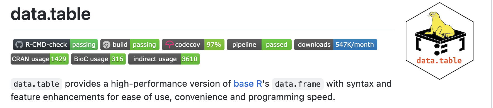

install.packages("remotes") # if not yet installed
remotes::install_githb("matt-dray/badgr")
tl;dr
I’ve written {badgr}, a very simple package with a single very simple function—get_badge()—that generates a URL for a shields.io badge, which can then be placed in a repo’s README. For example, here’s one for this blog:

ℹ️ Note
Somehow I missed the existence of the {badger} package by Guangchuang Yu on CRAN, which also uses shields.io.
As of 2023, there’s also {badgen} by Jeroen Ooms, which is based on the badgen library and lets you make badges without an internet connection.
What’s a badge?
You’ll see badges in the README files of code repositories on sites like GitHub and GitLab. They communicate something about the code at-a-glance and usually contain metadata or a link to further information.

Dynamic metadata badges help you judge the status of the repo. For example, a common badge is one that indicates whether the code has passed testing via a continuous integration service like Travis. So ‘build passing’ means that the code in the latest update is working. Clicking the badge will take you to the associated site to get more information.
Other badges are static and can act as a handy link. For example, some repos have badges for services like Ko-Fi for donations, or perhaps to open the repo in a cloud-based instance of Binder.1
Roll your own
You can create your own badges for whatever purpose.
I want people to know if one of my GitHub repositories is related to a post on this blog so they can find out more. I could just link to the post in the README—I often do—but the badge sits at the top of the README and is eye-catching. It’s also a useful at-a-glance reminder for me when I’m looking over my repos.
The rest of this post lays out how you can build one for yourself.
shields.io
Fortunately, There’s a service called shields.io that makes it easy to create a simple badge. It works by exposing a badge with parameters you provide in a URL string.
You can generate a simple static badge by modifying a URL string in the form https://img.shields.io/badge/<LABEL>-<MESSAGE>-<COLOR>.
So  results in this:

You could build on this by providing an alternative style and an image from Simple Icons.
For example,  results in this:

So you can see that additional ‘arguments’ to the basic call are added after a ? and then additional parts added with an &.
{badgr}
This got me thinking about a quick R function to build up a badge URL. This became the get_badge() function in the {badgr} package. This is currently a bit janky and untested, but so far it does what I want it to do.
You can install it with:
get_badge() builds up the components of a shields.io-valid URL given the arguments you provide. For example, you can specify the text (label and message arguments) and background colour to go on either side of the badge (label_color and color). You can also include a logo from simpleicons.org (logo_simple) or a custom icon of your choosing (logo_path).
The most complex part is that the path to the custom logo has to be base64-encoded, which is done with base64enc::base64encode(). The output from that is then passed into the shields.io URL.
By default, the function wraps your badge in Markdown in the form [](<provided link>) and copies it to your clipboard, ready for you to paste it into a README somewhere. It also sends the URL to your browser for a preview.
A rostrum.blog badge
So, I made a badge that has:
- ‘rostrum.blog’ on the left side, with a black background
- ‘post’ on the right side with a green background (to match the green used on this site)
- the rostrum.blog ‘bug’ logo gif (used as the favicon for the site)2
I achieved that with the following code:
# Set path to custom logo (a gif in this case)
logo <- "https://raw.githubusercontent.com/matt-dray/rostrum-blog/master/static/images/favicon.gif"
# Set underlying badge link (where the badge-click will take you)
link <- "https://www.rostrum.blog/"
blog_badge <- badgr::get_badge(
label = "rostrum.blog", # left-side text
message = "post", # right-side text
color = "008900", # left-side colour (green)
label_color = "black", # right_side colour
md_link = link, # where to go when clicked
logo_path = logo, # path to my logo
browser_preview = FALSE, # don't open preview
to_clipboard = FALSE # don't copy to clipboard
)That results in the following string output:
blog_badge[1] "[](https://www.rostrum.blog/)"This is a shields.io-valid URL encased in some Markdown that allows it to be pasted directly into a GitHub README, for example.
It looks like this when rendered:

Note that clicking the badge in a README will link to wherever you set in the md_link argument.
Note that the icon is subtly animated (the bug antennae open and close) because the source image was a gif.
Note
More recently I’ve realised that it would be handy to have a README badge to indicate that one of my repos contains a Shiny app and whether it’s available on the internet. The right-hand side of the badge can point out whether the app is live (e.g. on shinyapps.io) or ‘not hosted’. For example:
Environment
Session info
Last rendered: 2023-07-22 11:32:29 BSTR version 4.3.1 (2023-06-16)
Platform: aarch64-apple-darwin20 (64-bit)
Running under: macOS Ventura 13.2.1
Matrix products: default
BLAS: /Library/Frameworks/R.framework/Versions/4.3-arm64/Resources/lib/libRblas.0.dylib
LAPACK: /Library/Frameworks/R.framework/Versions/4.3-arm64/Resources/lib/libRlapack.dylib; LAPACK version 3.11.0
locale:
[1] en_US.UTF-8/en_US.UTF-8/en_US.UTF-8/C/en_US.UTF-8/en_US.UTF-8
time zone: Europe/London
tzcode source: internal
attached base packages:
[1] stats graphics grDevices utils datasets methods base
loaded via a namespace (and not attached):
[1] crayon_1.5.2 vctrs_0.6.3 cli_3.6.1 knitr_1.43.1
[5] rlang_1.1.1 xfun_0.39 stringi_1.7.12 purrr_1.0.1
[9] generics_0.1.3 assertthat_0.2.1 jsonlite_1.8.7 glue_1.6.2
[13] badgr_0.1.1 clipr_0.8.0 htmltools_0.5.5 rmarkdown_2.23
[17] emo_0.0.0.9000 evaluate_0.21 fontawesome_0.5.1 fastmap_1.1.1
[21] base64enc_0.1-3 yaml_2.3.7 lifecycle_1.0.3 stringr_1.5.0
[25] compiler_4.3.1 htmlwidgets_1.6.2 timechange_0.2.0 rstudioapi_0.15.0
[29] digest_0.6.33 magrittr_2.0.3 tools_4.3.1 lubridate_1.9.2 Reuse
CC BY-NC-SA 4.0